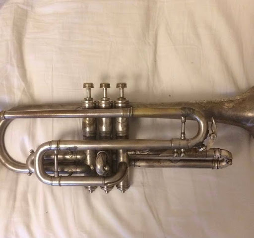
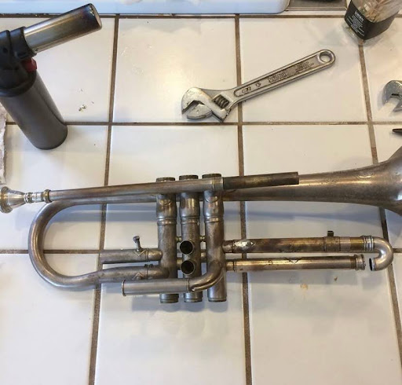

I bought a nonworking WW1 era cornet from goodwill and rebuilt it.
Using a kitchen blowtorch, solder and flux, I was able to braze all of the joints and seal all of the leaks.
Below is a video of me playing an excerpt from the Carnival of Venice. It doesn't sound too bad considering the age of the instrument and the repairs I did to it.